Halloween – woher das Fest kommt und wie man es in Irland feiert – Lesespurgeschichte mit Rätselaufgaben (Klasse 3)

Englisch-Werkstatt: Idioms: Englische Redewendungen – kostenlos, Klasse 3–4

Englisch-Werkstatt: I have, who has? Das Kartenspiel in der Schleife – kostenlos, Klasse 3–4

Englisch-Werkstatt: Tongue Teasers: Englische Zungenbrecher – kostenlos, Klasse 3–4

Englisch-Werkstatt: All about me: Ich stelle mich vor – kostenlos, Klasse 3–4

Englisch-Werkstatt: Read and Colour: Lesen und Ausmalen – kostenlos, Klasse 3–4
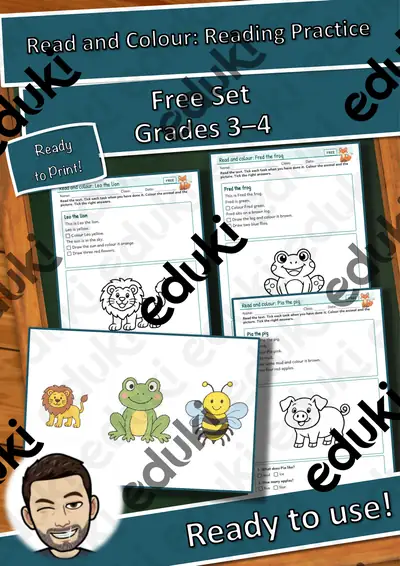
English Workshop: Read and Colour: Reading Practice – free, Grades 3–4
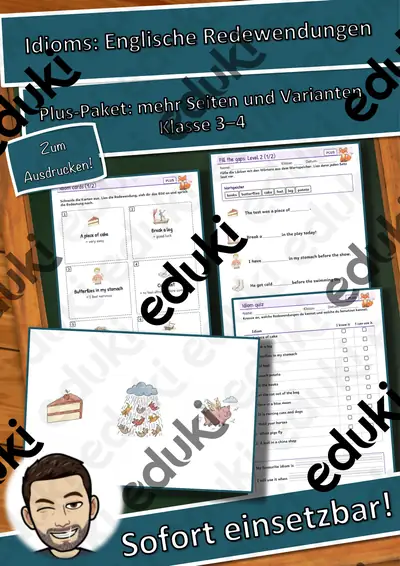
Englisch-Werkstatt: Idioms: Englische Redewendungen – Plus-Paket, Klasse 3–4
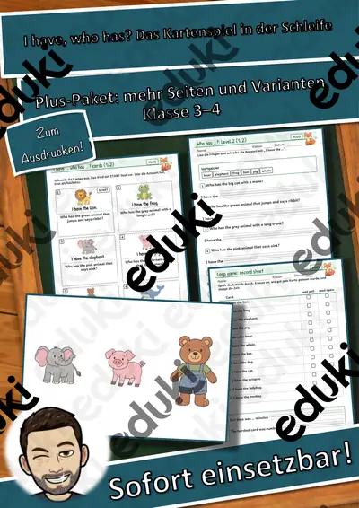
Englisch-Werkstatt: I have, who has? Das Kartenspiel in der Schleife – Plus-Paket, Klasse 3–4
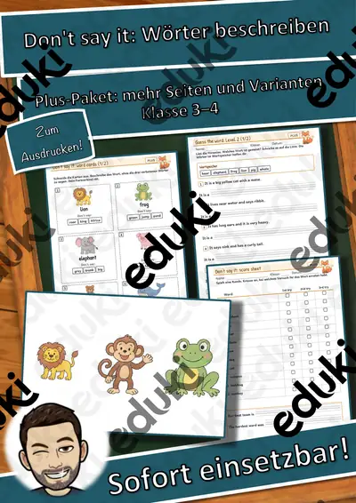
Englisch-Werkstatt: Don't say it: Wörter beschreiben – kostenlos, Klasse 3–4
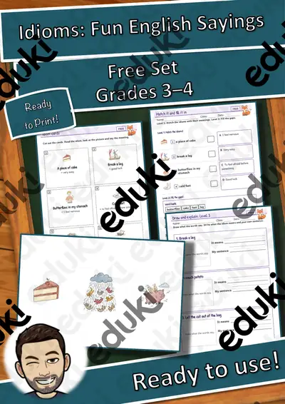
English Workshop: Idioms: Fun English Sayings – free, Grades 3–4
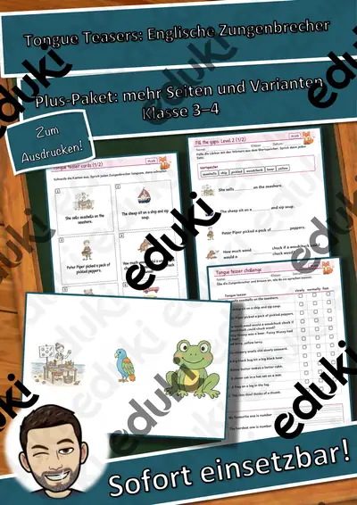
Englisch-Werkstatt: Tongue Teasers: Englische Zungenbrecher – Plus-Paket, Klasse 3–4
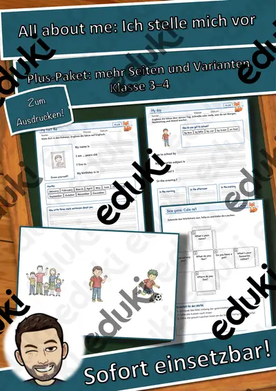
Englisch-Werkstatt: All about me: Ich stelle mich vor – Plus-Paket, Klasse 3–4

English Workshop: I Have, Who Has? The Loop Card Game – free, Grades 3–4

English Workshop: Don't Say It: Describe the Word Game – free, Grades 3–4

English Workshop: Tongue Teasers: Tricky Sentences to Say Fast – free, Grades 3–4
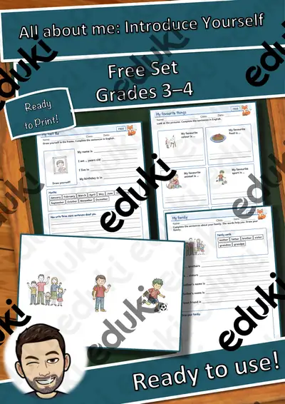
English Workshop: All about me: Introduce Yourself – free, Grades 3–4
English Workshop: Idioms: Fun English Sayings – Plus Pack, Grades 3–4
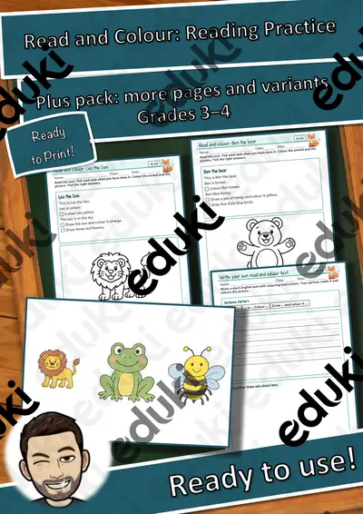
English Workshop: Read and Colour: Reading Practice – Plus Pack, Grades 3–4

Englisch-Werkstatt: Adjectives & Adverbs – Describing Words, Poster und Spiele, Kl. 3–4
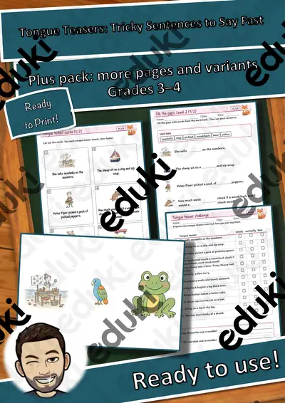
English Workshop: Tongue Teasers: Tricky Sentences to Say Fast – Plus Pack, Grades 3–4
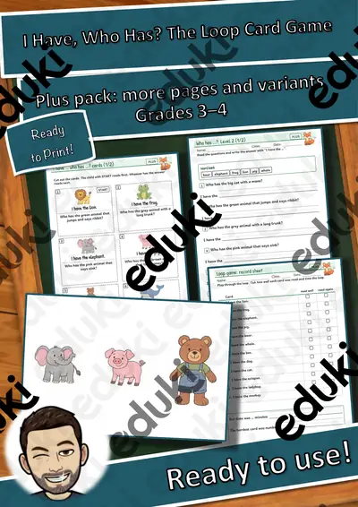
English Workshop: I Have, Who Has? The Loop Card Game – Plus Pack, Grades 3–4
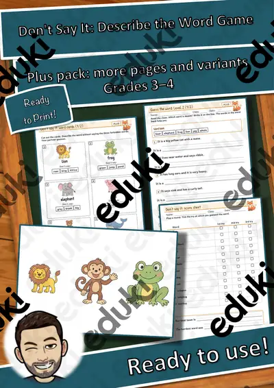
English Workshop: Don't Say It: Describe the Word Game – Plus Pack, Grades 3–4
English Workshop: All about me: Introduce Yourself – Plus Pack, Grades 3–4

Materialpaket Steckbriefe Bundesstaaten der Vereinigten Staaten von Amerika #demokratiestärken

Steckbrief Kalifornien - Bundesstaat der Vereinigten Staaten

Steckbrief Delaware - Bundesstaat der Vereinigten Staaten
Keine Materialien gefunden – versuch einen anderen Suchbegriff oder Filter.